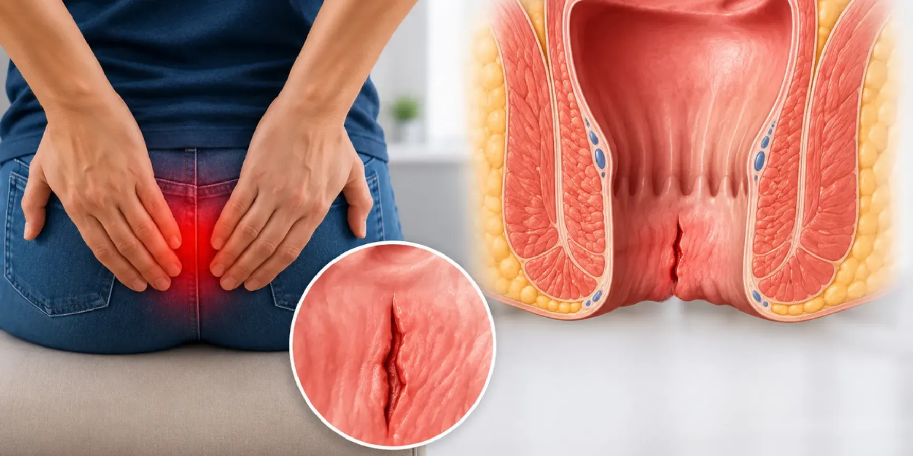

An anal fissure, also called fissure in ano, is a small tear in the skin lining the anus. It causes sharp pain when you pass stool and sometimes a little bright red blood.
Dr. Pradipkumar Tupere, a proctologist and general surgeon at Navoday Clinic in Kharadi, Pune, examines you first and then explains your options. A new fissure often heals with simple care, and a procedure is considered when a fissure does not heal.
At a glance
| Topic | In brief |
|---|---|
| What it is | A small tear in the lining of the anal canal. |
| Common signs | Sharp pain during and after a bowel movement, a little bright red blood on the paper or the stool, and a tight, spasming feeling. |
| See a doctor if | Pain or bleeding continues beyond a few weeks, or you avoid passing stool because of the pain. |
| Who treats a fissure | A proctologist or a general surgeon who treats anorectal conditions. |
| Where | Navoday Clinic, Kharadi, Pune. |
Symptoms of an anal fissure
A fissure usually announces itself during a bowel movement.
- Sharp, cutting or burning pain while passing stool, which can last from a few minutes to several hours afterwards.
- A small amount of bright red blood on the toilet paper or on the surface of the stool.
- Fear of passing stool because of the pain, which can lead to constipation and make the fissure worse.
- Itching or irritation around the anus.
- In a long-standing fissure, a small skin tag at the edge of the tear.
Pain while passing stool: is it always a fissure?
No. A fissure is a common cause of sharp pain with a bowel movement, but piles with a blood clot, an infection near the anus, a fistula or a narrowed anal canal can cause pain too. Only an examination can tell which one it is.
See a doctor soon if
- Pain or bleeding continues for more than a few weeks despite simple care.
- Pain is so severe that you avoid passing stool.
- Bleeding is heavy, or the stool looks dark or tarry.
- You have fever, swelling or pus near the anus.
- Your bowel habit has changed, or you are losing weight without trying.
Bleeding should always be examined, because other conditions can look similar.
Why anal fissures develop
A fissure forms when the lining of the anal canal is stretched or injured more than it can take. Common causes and risk factors include:
- Passing a hard, large stool, or straining during a bowel movement.
- Long-standing constipation.
- Repeated diarrhoea.
- Childbirth, in women.
- A tight sphincter muscle, which reduces blood flow to the area and slows healing.
- Less commonly, an underlying condition such as inflammatory bowel disease or an infection, which the doctor looks for if a fissure sits in an unusual place or does not heal.
Acute and chronic fissures
A new (acute) fissure often heals within a few weeks with simple care. A fissure that lasts longer than about six to eight weeks is called chronic, and it is less likely to heal without further treatment.
Treating the cause, most often constipation, is part of every fissure plan, so Dr. Tupere asks about your diet, bowel habits and daily routine.
How an anal fissure is diagnosed
A fissure is usually diagnosed from your history and a gentle examination. Dr. Tupere also checks whether something else could be causing your symptoms.
01
Your history
He asks about the pain, the bleeding, your bowel habits, your diet, your medicines and how long the problem has lasted.
02
Examination
He gently examines the skin around the anus, where a fissure can often be seen. If the area is too painful, he may postpone the internal examination or use a local anaesthetic.
03
Further tests when needed
If the fissure is in an unusual position, does not heal, or comes with other symptoms, he may advise more tests, such as a colonoscopy.
Fissure or piles?
| Feature | Anal fissure | Piles |
|---|---|---|
| What it is | A small tear in the anal lining. | Swollen veins in or around the anal canal. |
| Pain | Sharp, during and after a bowel movement. | Often little pain, unless a clot forms. |
| Bleeding | A little bright red blood on the paper or the stool. | Bright red blood, sometimes dripping or splashing into the bowl. |
| Lump | Usually none, sometimes a small skin tag. | A soft lump that may come out and go back. |
Both can happen together, so only an examination can tell which one you have.
Anal fissure treatment options, chosen after examination
Most fissures heal without surgery once constipation is treated and the muscle spasm eases. A procedure is considered when a fissure does not heal. Dr. Tupere advises the right option only after examining you.
Without a procedure
- Soft stools: More fibre and water, and a stool softener if advised, so the stool does not tear the area again.
- Warm sitz baths: Sitting in warm water for 10 to 15 minutes, especially after a bowel movement, relaxes the muscle and eases the pain.
- Prescribed ointments: Some ointments relax the sphincter muscle and improve blood flow so the tear can heal. Use only what the doctor prescribes.
- Botulinum toxin injection: For some patients who do not respond to the steps above, an injection relaxes the sphincter muscle for a few months.
Procedures for a fissure that does not heal
| Procedure | How it works | When it is considered |
|---|---|---|
| Lateral internal sphincterotomy | A small cut in part of the internal sphincter muscle releases the spasm so the fissure can heal. | A chronic fissure that has not healed with other care. |
| Fissurectomy | The fissure and its scarred edge are removed, sometimes with a skin tag, so that a fresh wound can heal. | A chronic fissure with scar tissue, or when cutting the sphincter should be avoided. |
| Laser-assisted treatment | Laser energy is used to treat the fissure and the tissue around it. | Selected cases, if this treatment is available at the Kharadi clinic. |
Each procedure has its own suitability, risks and recovery. For example, cutting the sphincter muscle carries a risk of difficulty controlling gas or stool, which Dr. Tupere explains before you decide.
Consult Dr. Pradipkumar Tupere for an anal fissure
Dr. Pradipkumar Tupere is a proctologist and general surgeon with an MBBS and an MS in General Surgery. He treats conditions of the anus and rectum, including fissures, piles and fistulas. His training includes stapler surgery for haemorrhoids in Italy and laser surgery for haemorrhoids and fistula in Austria.
What to expect at your visit
- Book: Call, message on WhatsApp or use the form. We confirm your appointment slot.
- Bring: Any earlier reports, a list of the medicines you take, a note of when the pain happens and how long it lasts, and your questions.
- Consultation and examination: Dr. Tupere listens to your symptoms and examines the affected area. A fissure can be sore to examine, so he explains each step and can pause the examination if needed. If the area is too painful, a local anaesthetic or a second visit may be considered.
- Your plan: He explains your diagnosis and your options. Most patients start with simple care, and not every visit leads to a procedure.
If a procedure is advised: You are guided through preparation, the procedure and recovery. Aftercare usually includes stool softeners, sitz baths and follow-up visits.
Anal fissure: frequently asked questions
Many new fissures heal within a few weeks with more fibre and water, soft stools and warm sitz baths. A fissure that lasts longer than about six to eight weeks is less likely to heal without treatment, so it should be examined.
A new fissure often heals in a few weeks with simple care. A chronic fissure takes longer and may need a procedure. Healing time depends on the cause and on how well constipation is controlled, and Dr. Tupere gives you an estimate after examining you.
Both can cause bleeding near the anus, but a fissure is a tear that hurts sharply during and after a bowel movement, while piles are swollen veins that often bleed with little pain. You can have both at once, so only an examination can confirm which one you have.
Eat more fibre, drink enough water, avoid straining and avoid sitting on the toilet for long. A warm sitz bath after a bowel movement eases the pain. Use ointments or medicines only if a doctor prescribes them, and do not treat bleeding yourself for weeks without an examination.
Many fissures heal completely, especially when constipation is treated. A fissure can return if the cause continues, so a plan to keep the stool soft is part of treatment. When a procedure is needed, it helps many patients heal, but results cannot be promised for everyone. Dr. Tupere explains what to expect in your case.
A procedure is usually considered when a fissure has not healed after about six to eight weeks of proper care, when the pain is severe, or when it keeps coming back. A common procedure is a small cut in the sphincter muscle, called a lateral internal sphincterotomy. Dr. Tupere advises the right option after examining you.
There is a risk of difficulty controlling gas or stool after a procedure that cuts the sphincter muscle. Dr. Tupere explains this risk, and the options that avoid cutting the muscle, before you decide.
Yes. Childbirth and constipation are common causes. Many fissures heal with simple care, but see a doctor if the pain or bleeding continues.
The cost depends on whether you need only medicines or a procedure, the type of procedure, the type of anaesthesia and the facility used. A fixed price cannot be given before an examination, so Dr. Tupere explains the plan and the expected cost at your consultation.
You can consult Dr. Pradipkumar Tupere, a proctologist and general surgeon at Navoday Clinic, Kharadi, Pune, for anal fissure evaluation and guidance on suitable treatment options.